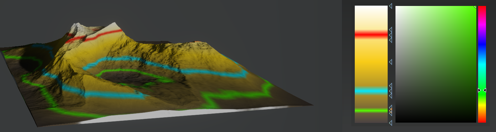

CLUTer
CLUTer lets you create color gradients which can be mapped to texture masks for creating color maps.
Coloration in Gaea is based on CLUTs, or color lookup tables. As 2D heightfields are essentially a grid of numbers ranging from 0.0 (lowest) to 1.0 (highest), CLUTs are represented as gradients which are mapped to those heights.
The lowest part of a gradient corresponds to the lowest part of the terrain. The highest part of a gradient corresponds to the highest part of the terrain. Everything in between is evenly distributed.
The CLUTer nodes let you take any grayscale input (such as Curvature, Slope, SurfTex, Flow) and map it onto a gradient.
Gradient Editor
Click anywhere in the gradient to create a new stop. Drag the stop to position it. Select the stop and press DEL to delete the stop.

You can use Input Clarity instead of interjecting an Autolevels node to the graph.
In this example, a Flow is mapped by CLUTer to create basic texture map.

Node Properties
| Setting | Description |
|---|---|
| Input Noise | Introduces noise to the incoming grayscale map. |
| Input Clarity | Applies localized contrast enhancements to the incoming map. |
| Input Auto Level | Applies an autolevels filter to the incoming map. |
| Reverse | Reverses the mapping of the gradient. |
| Color Noise | Introduces minor color distortions to the map. |
| Output Clarity | Applies localized contrast enhancements to the output texture. |
| Output Auto Level | Applies an autolevels filter to the output texture. |
| Sample Density | The number of samples to use for interpolation between colors. Higher values give smoother gradients (within reason). |
| 256 (Fast) | |
| 512 (Slower) | |
| 1024 (Very Slow) | |
| 2048 (Overkill) |